Isekai Tensei Soudouki
Different World Reincarnation Riot Report / 異世界転生騒動記
Author: Takami Ryousen (高見梁川)
Illustrator: Ririnra (りりんら)
Synopsis:
Baldr Cornelius is the son of a noble of the Mauricia kingdom and inside him also dwell the souls of the avaricious warring states commander Oka Sanai Sadatoshi and animal ear otaku high schooler Oka Masaharu. Follow the journey of these 3 souls in a single body, as they exhibit extraordinary abilities when it comes to combat or managing the domain.
Volume 1
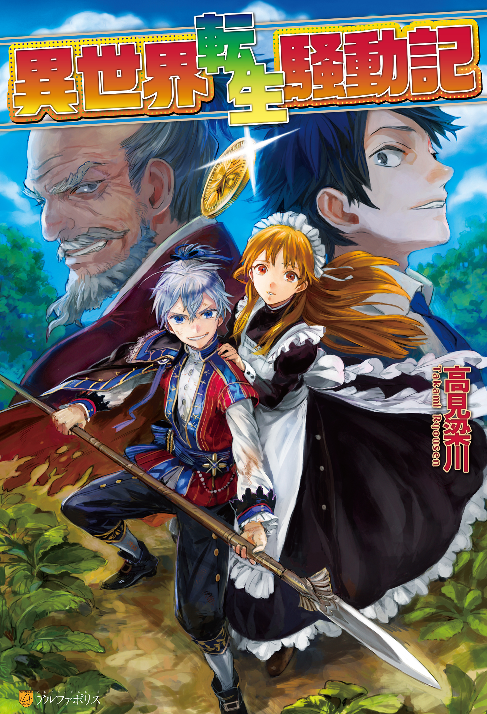
Illustrations
Prologue – Reincarnated Soul
Chapter 1 – Domestic Affairs Cheat, Start
Chapter 2 – Visitor From the East
Chapter 3 – A New Journey
Volume 2
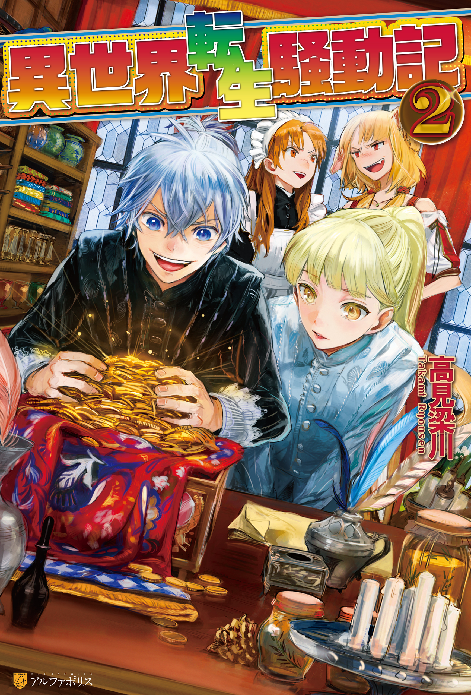
Illustrations
Chapter 1 – Knight Academy
Chapter 2 – Business Chance Arrival!
Chapter 3 – Malicious Trap
Chapter 4 – The Princess’s Sickness
Side Story – A Maiden’s Secret Diary
Volume 3
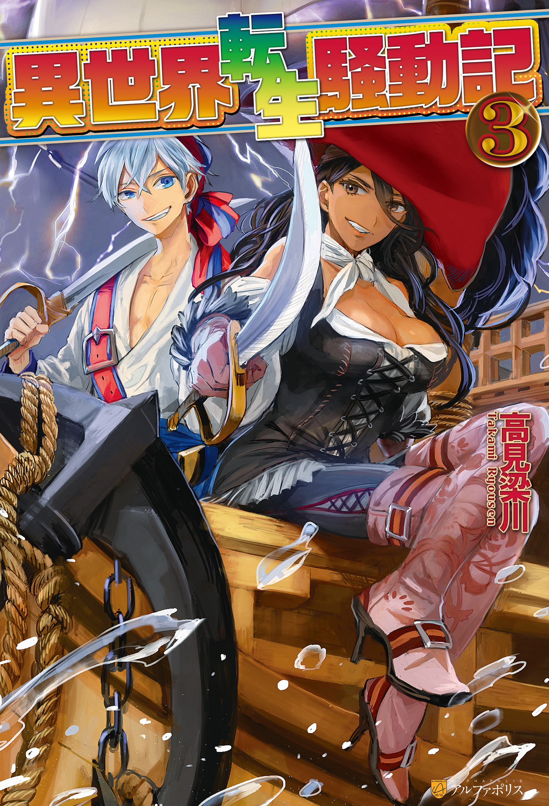
Illustrations
Chapter 1 – The One Who Will Succeed the Throne
Chapter 2 – A Contract With the Devil
Chapter 3 – Black Storm
Chapter 4 – The End of Darkness
Side Story – A Commotion From Love
Volume 4
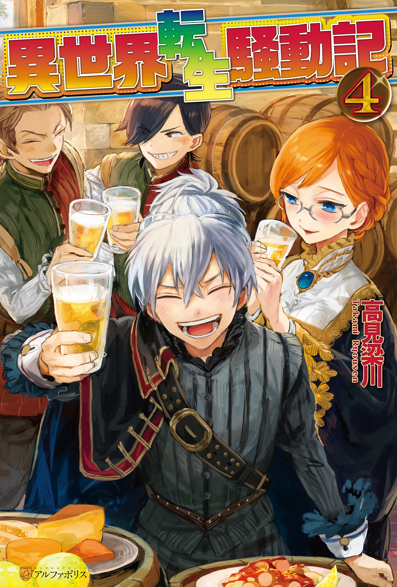
Illustrations
Chapter 1 – Triumphant Return to Homeland
Chapter 2 – The Dawn of Antrim
Chapter 3 – Those Who Lurk
Chapter 4 – Defensive Battle at the Border
Side Story – A Warrior’s Reminiscence
Volume 5
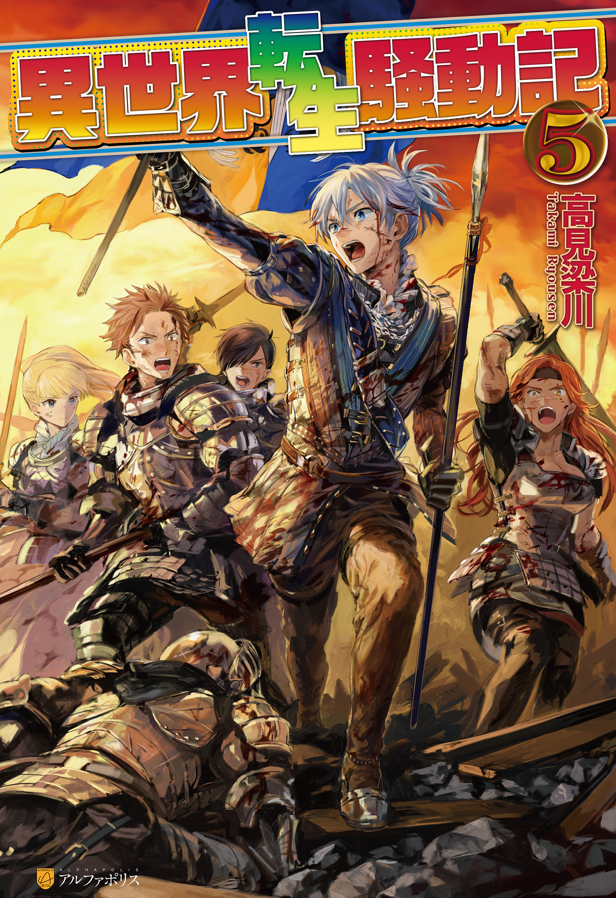
Illustrations
Chapter 1 – The Night Before the Start of Battle
Chapter 2 – An Extraordinary First Battle
Chapter 3 – Each One’s Decision
Chapter 4 – Fierce Battle, Once More
Chapter 5 – At the End of the Battle
Volume 06
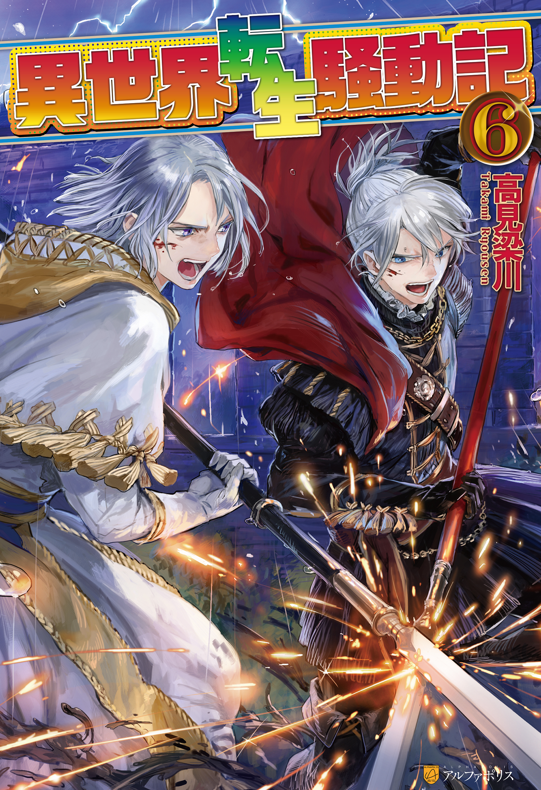
Illustrations
Chapter 1 – New Life
Chapter 2 – At the Victory Celebration
Chapter 3 – To the Beast God Shrine
Chapter 4 – Hidden Past
Chapter 5 – Stormy Duel
Volume 07
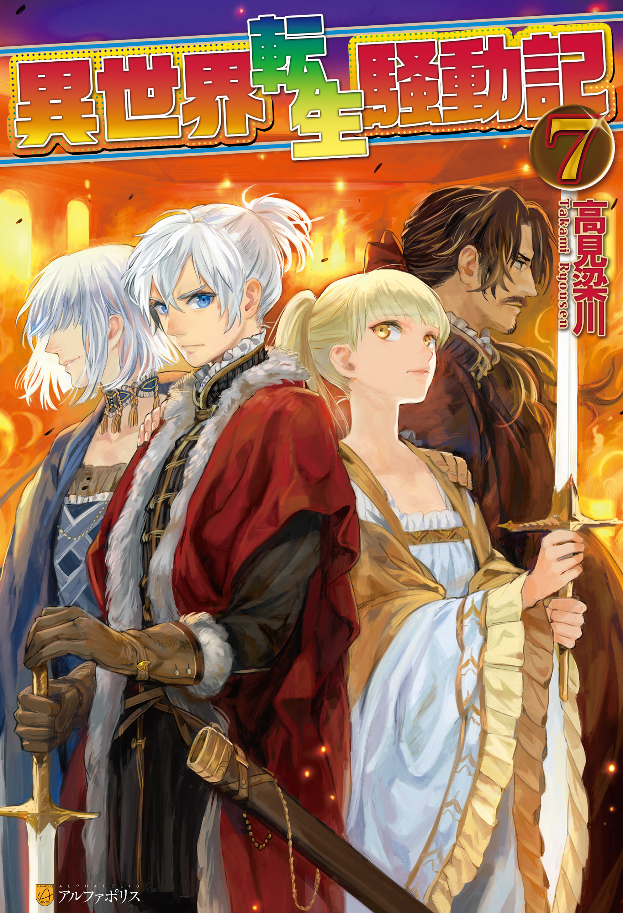
Illustrations
Character Introduction
Chapter 1 – Lie And Truth
Chapter 2 – Circle of Destiny
Chapter 3 – The Dream of Beastman Race
Chapter 4 – The Power to Change the World
Volume 08
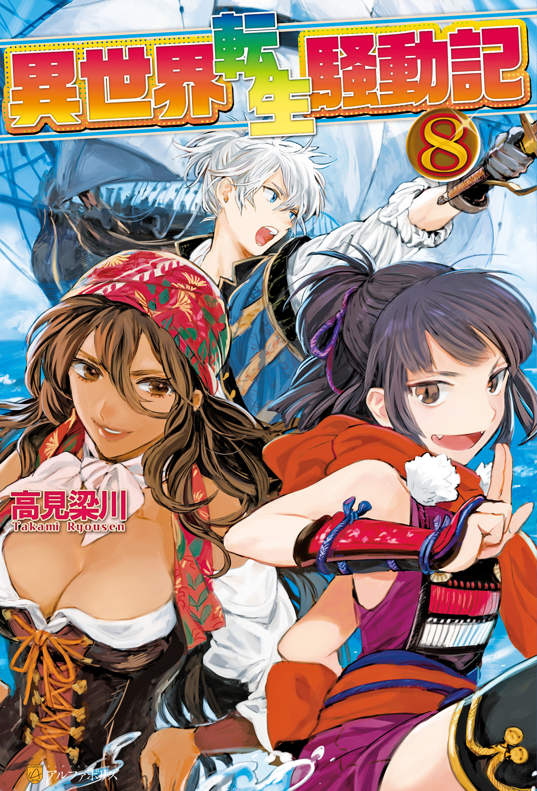
Illustrations
Character Introduction
Chapter 1 – The Princess’s Resolve
Chapter 2 – Heading for Departure
Chapter 3 – Fierce Battle of South Seas
Chapter 4 – The Giant of the Sea
Side Story – Zirco’s Survival
Volume 09
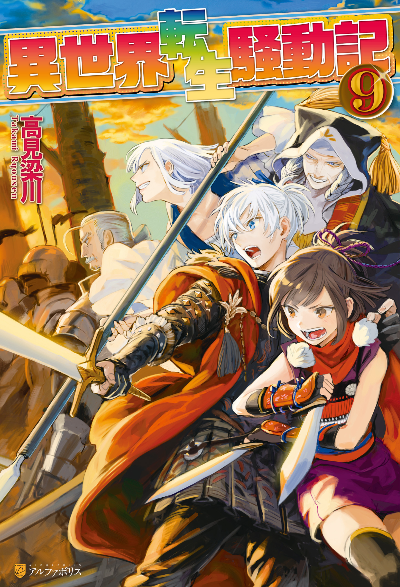
Illustrations
Character Introduction
Chapter 1 – The Power of Holy Relic
Chapter 2 – Assassin
Chapter 3 – The Dukedom’s Ghost
Chapter 4 – Two Eccentrics
Volume 10
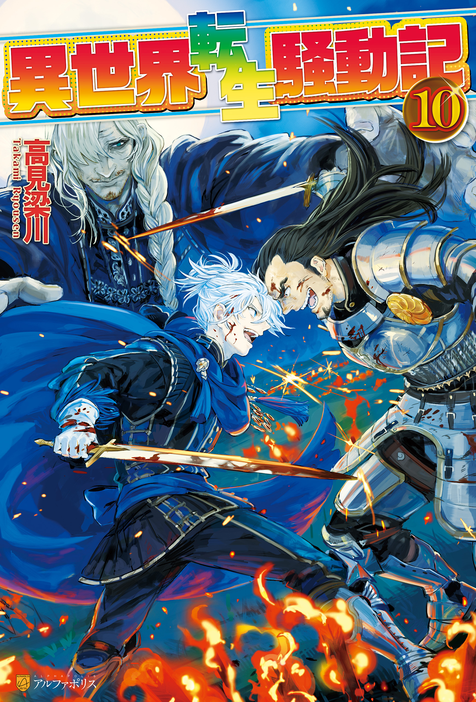
Illustrations
Character Introduction
Chapter 1 – Reinforcement’s Arrival
Chapter 2 – Whirlpool of Schemes
Chapter 3 –Surprise Attack of Riga
Chapter 4 – Deathly Battle of Moonlit Night
Volume 11
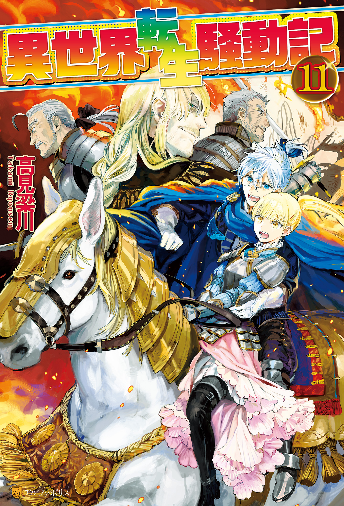
Illustrations
Character Introduction
Chapter 1 – The Fleet’s Decisive Battle
Chapter 2 – The Declining Dukedom
Chapter 3 – Marching Toward the Future
Chapter 4 – The Burning Capital
Volume 12
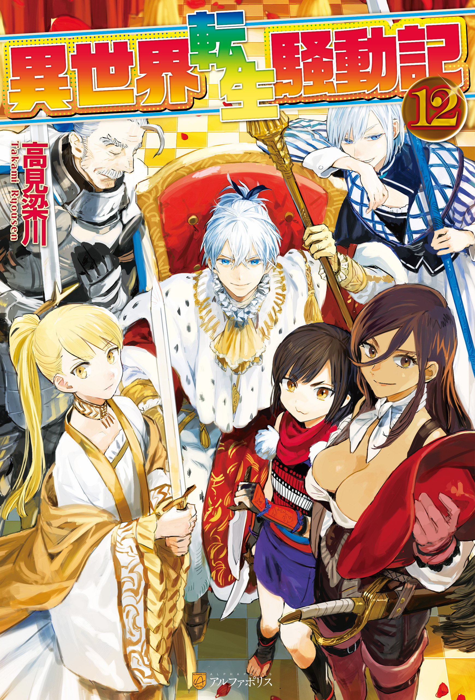
Illustrations
Character Introduction
Chapter 1 – Crusade Proclamation
Chapter 2 – A Mediocre Man
Chapter 3 – Wedding Capriccio
Chapter 4 – The Day of Coronation
Volume 13
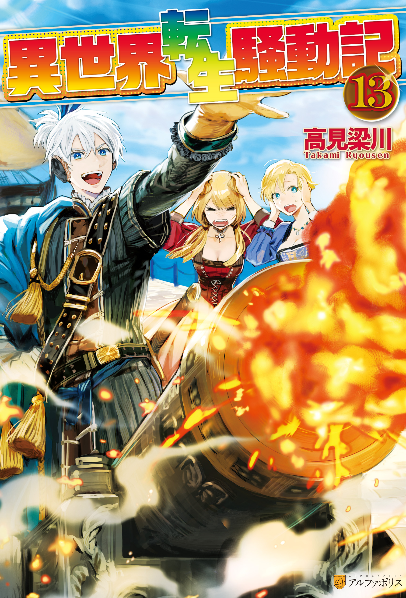
Illustrations
Character Introduction
Chapter 1 – Honeymoon
Chapter 2 –Revolution of Green
Chapter 3 – The New Sea Battle
Chapter 4 – The Avenger’s Stage
Volume 14
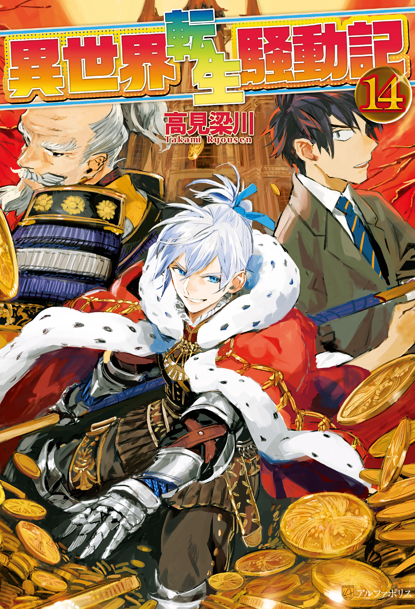
Illustrations
Character Introduction
Chapter 1 – Northern Battlefront
Chapter 2 – Supreme Ruler of the Sea
Chapter 3 – The Beast King’s Night Attack
Side Story – The Daily Life of Villainess
Continuation of vol 14 in web novel:
Chapter 172
Chapter 173
Chapter 174
Chapter 175
Chapter 176
Chapter 177
Chapter 178
Chapter 179
Chapter 180
Chapter 181